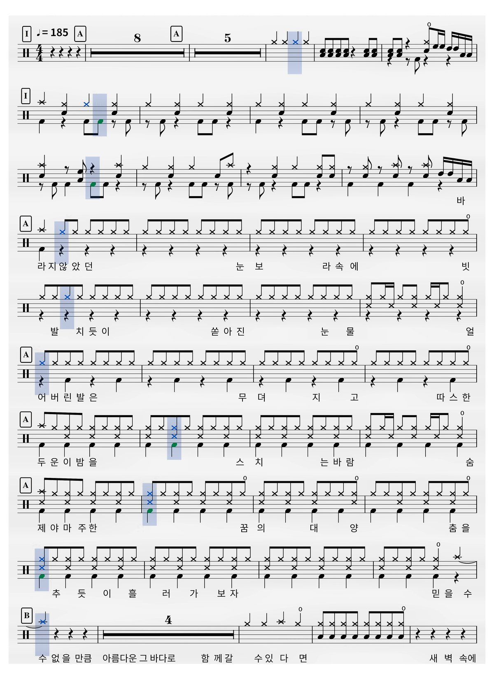

4단계
결과 검토 및 저장
/
2024_정기공연_앙상블_유다빈밴드_항해_드럼악보_최종검토_수정본(연주_악보포함).mp4
4K 60fps · 03:52
저장된 PDF와 일치함 (5 / 6장)
00:00:15 - 도입부 및 인트로
1 / 6
이 캡처는 최종 PDF에서 제외되었습니다
내보내기 결과에 포함되지 않습니다. 아래 버튼을 눌러 다시 포함할 수 있습니다.

맞춤
Space 포함/제외 토글 · ←/→ 이동
드럼 악보 검토
2024_정기공연_앙상블_유다빈밴드_항해_드럼악보_최종검토_수정본(연주_악보포함).mp4
최신 PDF 준비됨 (5장)
P.1
00:00:15 - 도입부 및 인트로
맞춤
최종 산출물에서 제외된 캡처
캡처 타임라인
(좌우 스크롤 또는 방향키 이동)
포함
제외
의심